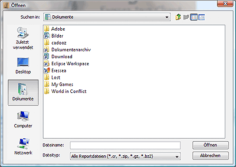

STRG-O
Dieser Punkt dient zum Öffnen von CRs (Eressea Computerreports). Nach dem Klick erscheint folgender Dialog:

Der Dialog ist weitgehend selbsterklärend und sollte einem normalen Datei-öffnen Dialog auf Deinem Computer entsprechen.